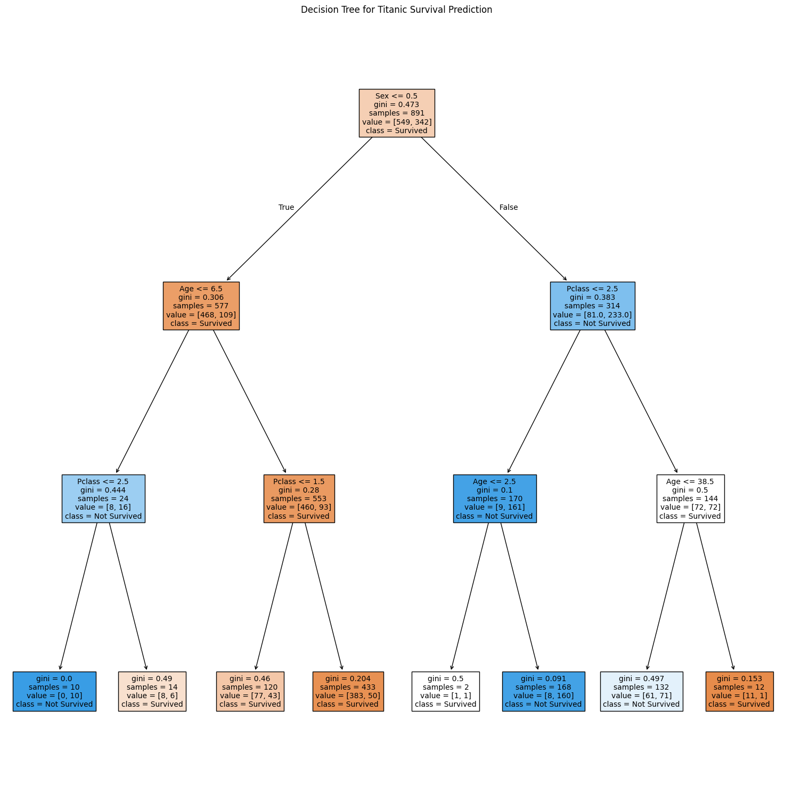

A machine learning project that uses Decision Trees to predict the survival chances of Titanic passengers.
Why choose this?
Although this project has no practical use, I believe it highlights how significantly age and class affected survival chances aboard the Titanic.
This project aims to predict the survival chances of Titanic passengers.
This project uses Decision Trees to make predictions.
When making predictions for this project, data such as age, gender, passenger class, and survival status were used.
Given the niche nature of this project, Kaggle was the primary source for the dataset used to make predictions.
The data was cleaned (e.g., by removing empty values) to enable graph generation.
Pre-processing steps included converting non-numerical data into numerical format (e.g., gender) and selecting relevant features for training the Decision Tree.
Using Python (Jupyter Notebook), I visualized the Decision Tree generated by the model to better understand how features influenced survival predictions.
The Decision Tree demonstrates splits in data based on features like gender, passenger class, and age to make predictions. These splits highlight the importance of certain variables in determining survival.
The images below showcase different decision trees from the random forest, each varying slightly from the others.
The visualization clearly shows how female passengers, children, and those in higher classes had better survival chances. This aligns with historical accounts of the Titanic disaster.
Decision Trees were chosen for their interpretability and ability to handle both numerical and categorical data effectively.
Unlike linear regression, which assumes a linear relationship, Decision Trees capture non-linear patterns and provide clear rules for decision-making.
In this project, I limited the tree depth to prevent overfitting and ensure generalizable predictions.
Online tutorials and documentation were invaluable for understanding and implementing Decision Trees. The following sources were particularly helpful:
This project was developed using Python, with Jupyter Notebook as the primary development environment.
The following Python libraries were crucial for the project:
These tools allowed for seamless pre-processing, model training, and visualization.
The Kaggle Titanic dataset required significant pre-processing to be usable for training the Decision Tree model.
Steps included: